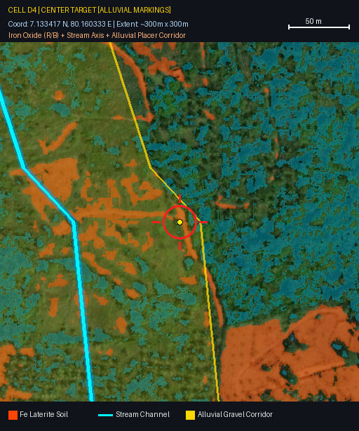

Algama, Kegalle 1 km Radius Ultra Close-Up Survey (49 Cells @ 300m)
Target: 7.133417 N, 80.160333 E (7°08'00.3"N 80°09'37.2"E - Algama, Sabaragamuwa) | ~58 cm/pixel
Raw Satellite
Alluvial Markings
Select Cell (A1 to G7):
Grid Index Map
A1
A2
A3
A4
A5
A6
A7
B1
B2
B3
B4
B5
B6
B7
C1
C2
C3
C4
C5
C6
C7
D1
D2
D3
D4
D5
D6
D7
E1
E2
E3
E4
E5
E6
E7
F1
F2
F3
F4
F5
F6
F7
G1
G2
G3
G4
G5
G6
G7
Tip: Press
SPACE
or
T
on your keyboard to toggle markings instantly.
Cell D4 | CENTER TARGET (7.133417 N, 80.160333 E)

Fe Laterite / Gravel Soil
Valley Stream Axis / Drainage
Alluvial Placer Corridor
Target Pinpoint